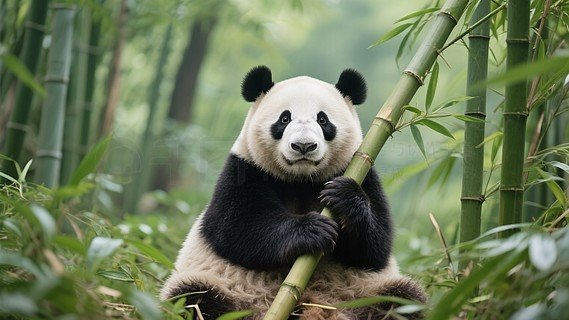
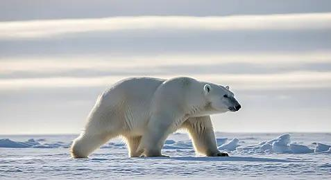
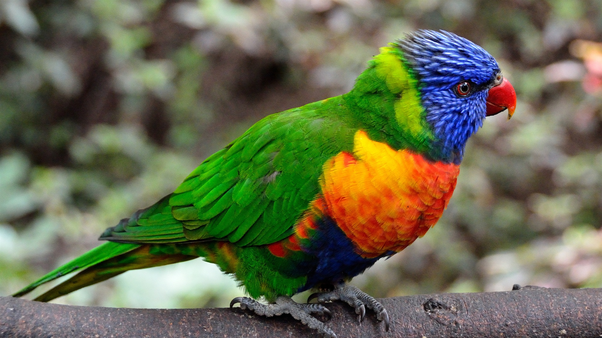
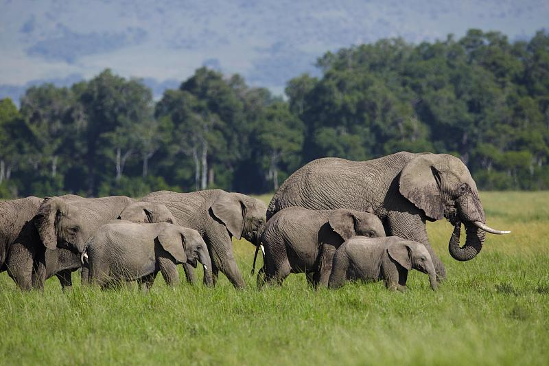
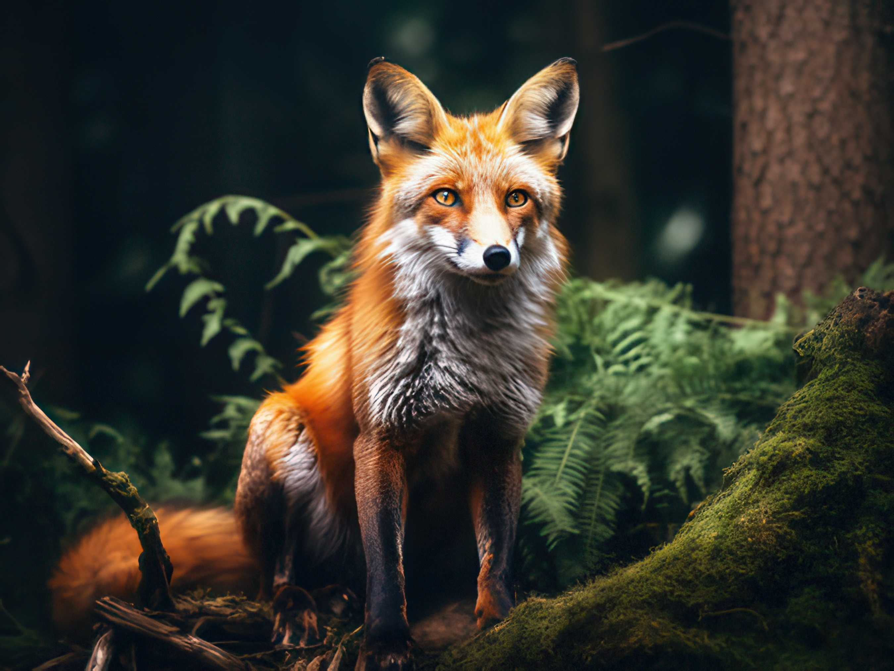
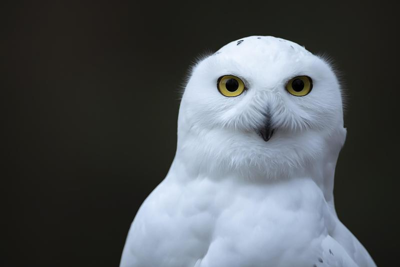
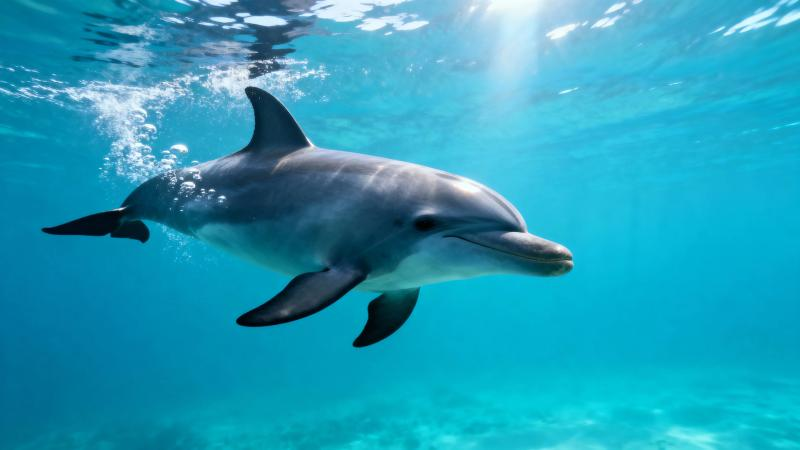

草原
Panthera leo
非洲狮
狮是唯一群居的大型猫科动物，狮群由多只母狮与少量雄狮组成，狩猎大多由母狮完成。
点按卡片可展开每位生灵的档案，用栖息地标签筛选你想了解的场景。
狮是唯一群居的大型猫科动物，狮群由多只母狮与少量雄狮组成，狩猎大多由母狮完成。

山林大熊猫虽然以竹子为食，分类上却属于食肉目，与熊的亲缘关系更近。

极地北极熊是世界上最大的陆地食肉动物，它的毛发其实是中空透明的，看起来白是因为反射光线。

丛林羽毛覆盖蓝、绿、黄、橙、红多种色彩，是雨林中最明亮的色彩之一。

草原非洲象是现存最大的陆生动物，成年个体体重可达 6 吨以上。

山林赤狐是分布最广的食肉动物之一，几乎遍布北半球的森林、草原与山地。

极地雪鸮是为数不多白天活动的猫头鹰，也是《哈利·波特》中海德薇的原型。

海洋海豚通过回声定位在海洋中导航与捕食，大脑发达，被认为是最聪明的动物之一。
不同的土地，孕育不同的生存智慧。每种栖息地都是地球写给生命的一张名片。
人类目前记载的物种以百万计，而昆虫占据其中绝大多数。
目前已描述的物种约有 150 万种，但科学家估算地球真实的物种总量可达 800 万种以上——我们只认识了其中的一小部分，仍有大量生灵等待被命名与保护。
左侧数据为基于学界公开估算的整理示意，用于呈现各门类的相对量级，非精确普查结果。